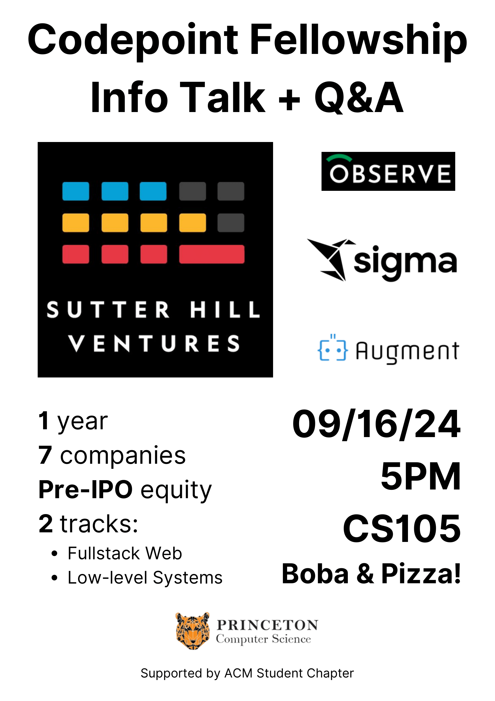

Sutter Hill Ventures - Information Session
What's going on?
Sutter Hill Ventures is coming to the COS Department at Princeton to present their Codepoint Fellowship (more info below), as well as present some of the work they do at the various companies in their portfolio. The fellowship has two tracks: one for students passionate about frontend/fullstack engineering and web development, and another for students interested in backend, low-level systems programming. You’re eligible for the fellowship this year if you are graduating in 2024/2025, but the session is open to anyone who might be interested in working with SHV in the future.Join us on Monday, September 16, 2024 from 5-6 PM in CS 105. Free food/boba will be provided! This information session composed of a talk, followed by a demo led by one of their former Codepoint Fellows and Q&A at the end of the session.

What is Sutter Hill Ventures?
Sutter Hill Ventures (SHV) is the oldest venture capital firm in Silicon Valley. Founded in 1962, SHV has invested in and built technology companies successfully for over 60 years, including NVIDIA, Pure Storage, and Snowflake Computing. Their approach centers on working with great technical founders to solve some of the most challenging problems in science and engineering. In the last decade, they have created sixteen companies worth over $100 billion dollars.What is the Codepoint Fellowship?
The Codepoint Fellowship is a highly competitive fellowship program that gives exceptional computer science graduates the opportunity to rotate through two of seven portfolio companies (Observe, Sigma, Augment, their internal team, and three in stealth) over the course of one year. In addition to receiving valuable technical training and mentorship from world-class engineers, fellows also receive equity in pre-IPO startups, close mentorship from SHV leadership, and access to professional development events and social activities with industry leaders and entrepreneurs as part of a close-knit cohort of talented early-career engineers.The fellowship has two tracks: one for students passionate in frontend/fullstack engineering and web development, and another for backend, low-level systems programming talent. You're eligible for the fellowship this year if you are graduating in 2024/2025. If you have any questions, please contact fellowships@shv.com.
Disclaimer: Any opinions, conclusions or recommendations expressed in this event do not necessarily reflect the views of Princeton University.